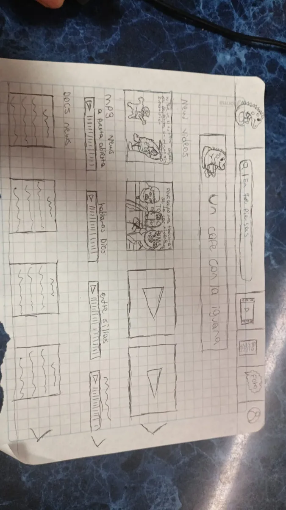

Revisado el 28 de octubre de 2026
Cómo van
Puntos del equipo
140de 240 posibles
Cada tarea cumplida suma 10 puntos. No hay otra forma de subir.
Avance por frente
Revisión del docente · 26 de octubre de 2026
Así les fue con lo que se revisó
- Sitio y desarrollo técnicoQuedó bien
Los seis hitos técnicos tienen evidencia y el sitio está publicado en GitHub Pages.
- AntecedentesQuedó bien
Cinco artículos en PDF en 01_Antecedentes.
- ArtículoPendiente
Sigue en blanco. Sin la pregunta escrita en la sección 1.3, la ruta no pasa del nivel 2.
Lo que sigueEscriban 1.1 y 1.3 en el artículo copiando de la propuesta, que ya la tienen.
Avances
Lo que ya se puede ver
Copias reducidas de lo que el equipo guardó en su carpeta. El original sigue allá.

Dibujo a mano de cómo se organizan los videos y los capítulos en la página.
Tu proyecto
Dónde está lo que construyeron
publicaciónPublicado y en línea
Publicado en GitHub Pages desde la rama main, carpeta /docs. Fue el primero del semillero en estar en internet.